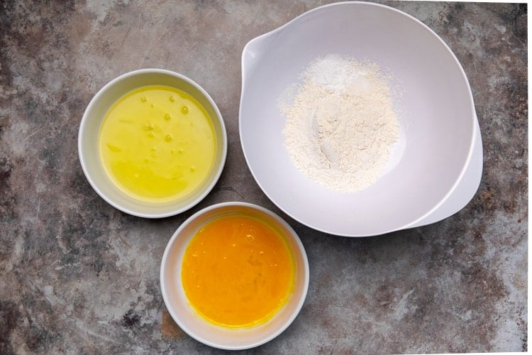
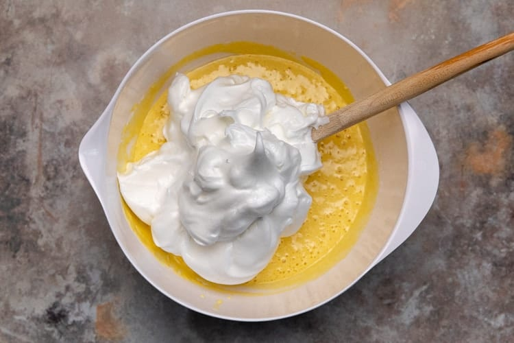
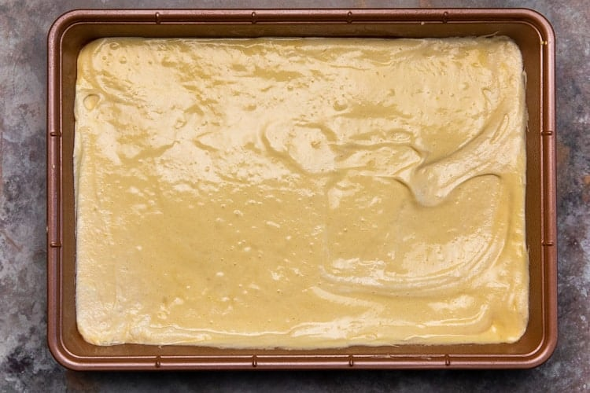
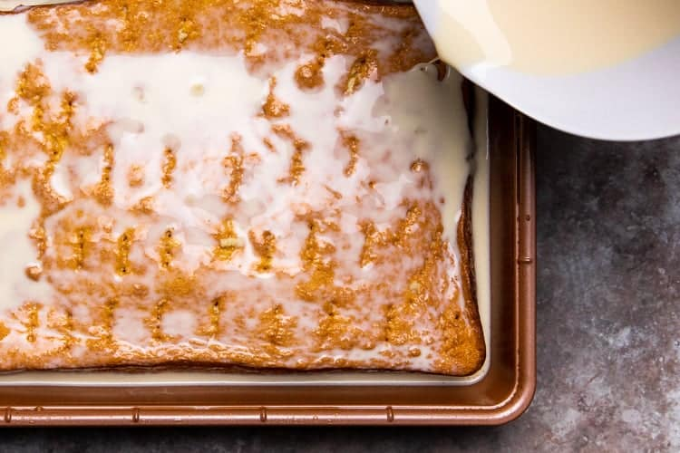
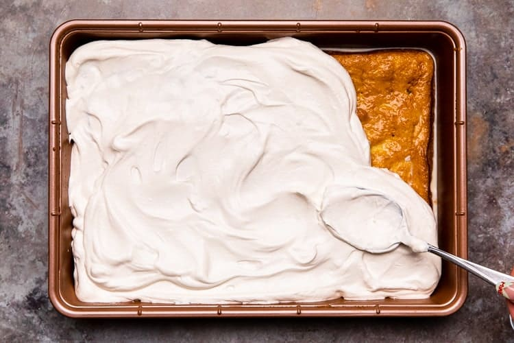
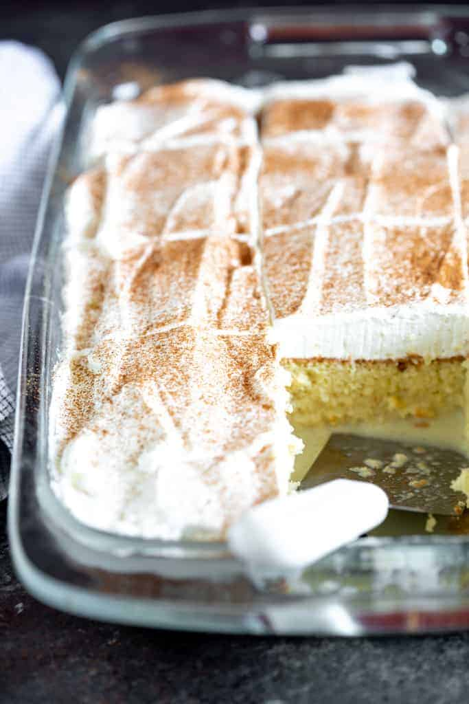

Ingredients
Cake:
- 1 cup all-purpose flour
- 1 1/2 teaspoons baking powder
- 1/4 teaspoon salt
- 5 large eggs , separated
- 1 cup granulated sugar , divided
- 1/3 cup whole milk
- 1 teaspoon vanilla extract
Milk Mixture:
- 12 ounce can evaporated milk
- 14 ounce can sweetened condensed milk
- 1/4 cup whole milk
Whipped Topping:
- 1 pint heavy whipping cream
- 3 Tablespoons powdered sugar
- 1/2 teaspoon vanilla extract
- ground cinnamon , for topping
Instructions
- Preheat oven to 350 degrees F. Grease a 9x13'' pan with non-stick cooking spray.
- In a medium bowl combine flour, baking powder, and salt. Separate the eggs into two other mixing bowls.
- Add 3/4 cup sugar to the bowl with the egg yolks and mix on high speed until yolks are pale yellow. Add 1/3 cup milk and vanilla and stir to combine. Pour the egg yolk mixture over the flour mixture and stir gently just until combined (don't over-mix).
- Use electric beaters to beat the egg whites on high speed. As the begin to whip into stiff peaks, gradually mix in the remaining 1/4 cup of sugar. Fold the stiffly beaten egg whites into the batter gently, scraping the bottom and sides of the bowl, until combined.
- Pour batter into prepared pan and smooth it into an even layer. Bake for 25 to 35 minutes, or until a toothpick inserted in the center of the cake comes out clean. Remove from the oven and allow cake to cool completely.
- Combine the evaporated milk, sweetened condensed milk, and whole milk in a small bowl. Once the cake has cooled use a fork to poke holes all over the top of the cake.
- Slowly pour the milk mixture over the the top of the cake, making sure to pour near the edges and all around. Refrigerate the cake for at least 1 hour or overnight, to allow it to soak up the milk.
- In the meantime, whip the heavy cream, sugar and vanilla until stiff peaks. Smooth over the top of the cake. Sprinkle cinnamon on top. Serve with fresh sliced strawberries, if desired.
Homemade:
How to Make Tres Leches Cake:
- In a medium bowl combine flour, baking powder, and salt. Separate the eggs into two other mixing bowls. 
- Add 3/4 cup sugar to the bowl with the egg yolks and mix on high speed until yolks are pale yellow. Add 1/3 cup milk and vanilla and stir to combine. Pour the egg yolk mixture over the flour mixture and stir gently just until combined (don't over-mix).
- Use electric beaters to beat the egg whites on high speed. As the begin to whip into stiff peaks, gradually mix in the remaining 1/4 cup of sugar. Fold the stiffly beaten egg whites into the batter gently, scraping the bottom and sides of the bowl, until combined. 
- Pour batter into prepared pan and smooth it into an even layer. Bake for 25 to 35 minutes, or until a toothpick inserted in the center of the cake comes out clean. Remove from the oven and allow cake to cool completely. 
- Combine the evaporated milk, sweetened condensed milk, and whole milk in a small bowl. Once the cake has cooled use a fork to poke holes all over the top of the cake.
- Slowly pour the milk mixture over the the top of the cake, making sure to pour near the edges and all around. Refrigerate the cake for at least 1 hour or overnight, to allow it to soak up the milk. 
- In the meantime, whip the heavy cream, sugar and vanilla until stiff peaks. Smooth over the top of the cake. 
- Serve with a sprinkle of cinnamon on top, and fresh sliced strawberries, if desired. Store Tres Leches Cake in the refrigerator, covered, for 3-5 days. 
Notes
- Store Tres Leches Cake in the refrigerator, covered, for 3-5 days.
- Make Ahead Instructions: You can make Tres leches cake 1-2 days in advance. In fact, I love to make this cake the night before so that the cake has a lot of time to soak up the milk mixture.
- Freezing Instructions: The baked and cooled cake can be frozen for up to 3 months, covered well. Thaw overnight in the fridge before pouring the three milks on top.
Nutrition
| Calo: 433kcal | Carbohydrates: 50g | Protein: 9g | Fat: 22g |
| Saturated Fat: 13g | Cholesterol: 152mg | Natri: 171mg | Kali: 344mg |
| Sugar: 41g | Vitamin A: 865IU | Vitamin C: 1.7mg | Canxi: 242mg |
| Iron: 1mg |